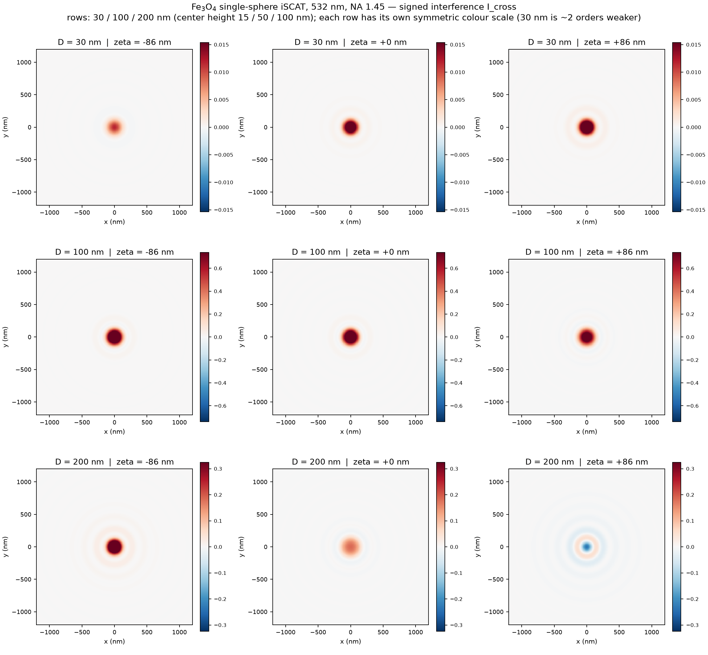
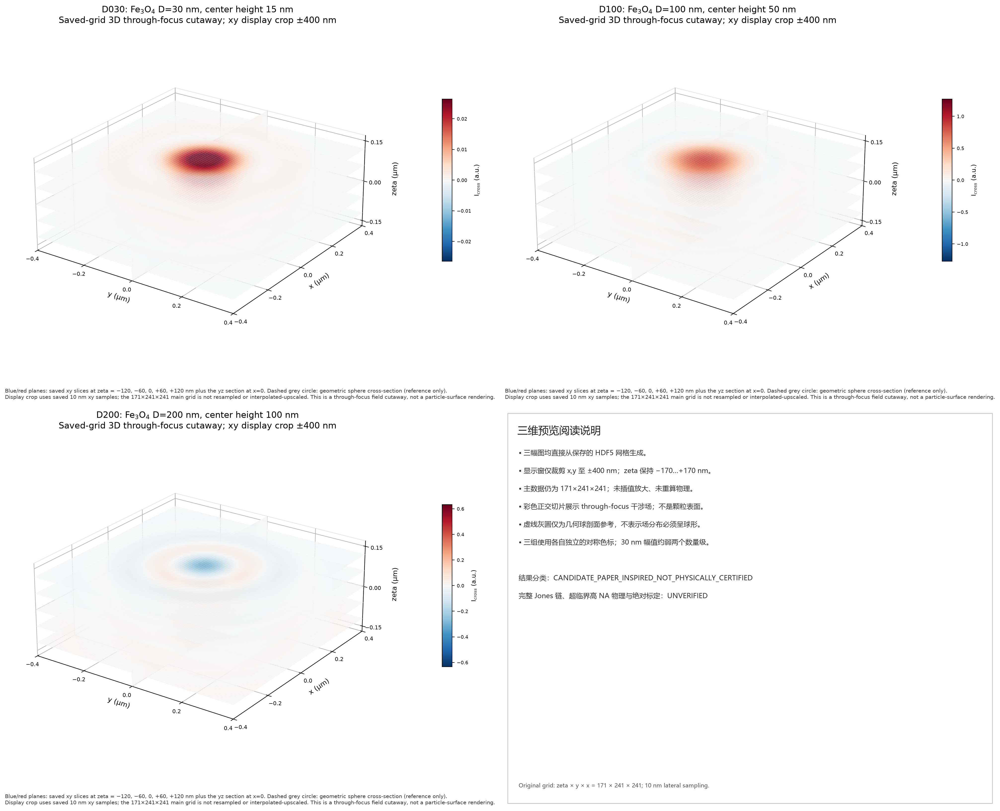

532 nm，NA 1.45，球心高度 15 / 50 / 100 nm。信号为带符号干涉项 Icross = 2 Re(conj(Eref)·Escat)，可正可负。 CANDIDATE · 未做物理认证


| 粒径 | 二维切片 | 三维切片体视 | 可旋转三维（离线） |
|---|---|---|---|
| 30 nm | PNG | PNG | HTML |
| 100 nm | PNG | PNG | HTML |
| 200 nm | PNG | PNG | HTML |
数据来源：data/D*/cube.h5 · 完整边界见
reports/physical_limitations.md